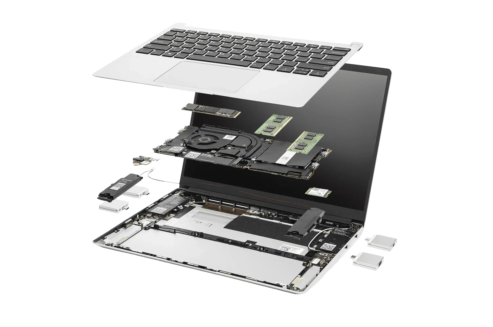

Waarom modulair ontwerp de toekomst is
Waarom modulair werken? Waarom niet? Wanneer je laptop stuk is, is zelden het hele apparaat defect. Wat als je in plaats van een nieuw toestel te kopen, simpelweg het onderdeel ("module") kan vervangen? Dit is namelijk beter voor het milieu, want er is minder vraag naar schaarse materialen en het is ook nog eens beter voor de portemonnee. Waarom doen we dit dan niet al lang? Waarom blijven de bedrijven die dit zouden kunnen realiseren, op de achtergrond? Die vragen willen we hier beantwoorden.

Van vraag naar verdieping
Het probleem
Vastgesoldeerde onderdelen en moeilijke reparaties maken van kleine defecten al snel een reden om een volledig nieuw toestel te kopen.
Lees meer 2 Pagina 2De oplossing
Door het gebruik van een modulaire laptop, wordt onderhoud, upgrades en herstel veel eenvoudiger.
Lees meer 3 Pagina 3Economische Haalbaarheid
Een herstelbaar toestel zal langer meegaan. Er is minder nood aan schaarse materialen bevatten en hierdoor op termijn financieel interessanter zijn.
Lees meer